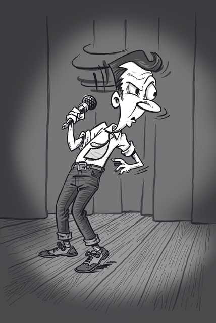
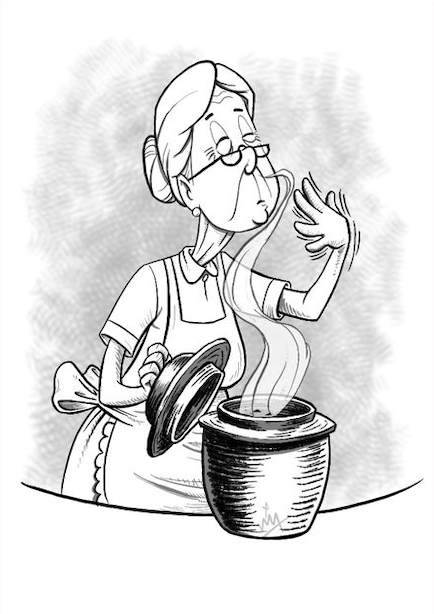
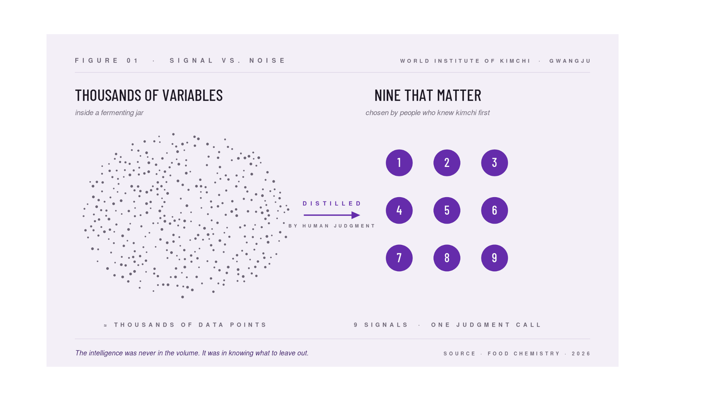

Want to know if your AI is lying to you? Ask a stand-up comedian.
Essays on judgement, data and evidence.


Dave Chappelle walked away from $55 million because his data said everything was fine. It wasn’t. A TTF story on the signal your AI will never surface, and what it’s costing you.
Illustration by Rizal Adnan, a human cartoonist with decades of knowing what funny looks like.
In 2005, Chappelle’s Show was the most watched series in Comedy Central history. Dave Chappelle had just signed a new deal worth $55 million. Ratings historic. Audience enormous. Sentiment overwhelmingly positive.
By every available measure, he was winning. Stay. Scale. Cash in.
He was on set, performing a sketch designed to make people squirm at an uncomfortable truth: to hold up a mirror at something they’d rather not see. Then a white crew member laughed.
Not louder than anyone else. Not at the wrong moment. Just different.
He walked shortly after.
The sketch was built to make people uncomfortable with a truth. But someone in that room walked away entertained by the very thing Chappelle was trying to challenge.
That crew member didn’t see the mirror. They saw the show. The discomfort, the entire point, didn’t reach them. They laughed past it.
The data saw them as identical. Same laugh. Same positive signal. Keep going.
One version of that laugh says: you got them. The other says: they got around you. No model can tell them apart.
But here is what makes this more than a data problem. That one wrong laugh was a brand authenticity alarm. Chappelle’s work had a specific intention: to hold a mirror up at discomfort, not to entertain around it. That intention was his brand. The wrong laugh told him his mirror was being used as a window. His meaning was being consumed without being received. That is not a ratings problem. That is an identity problem. And it arrived, quietly, in a single laugh that looked identical to all the right ones.
This is not a problem unique to comedy. It is the central problem of every business running AI-measured customer experience today.
AI aggregates. That is what it is built to do. It collects every signal in the room, finds the average, and reports that average as the truth. A roomful of right laughs plus one wrong laugh produces a single output: positive sentiment. The wrong laugh disappears. It does not lower the score. It does not trigger an alert. It is absorbed into the average and the dashboard stays green.
The room has already turned. The model hasn’t noticed.
That is the wrong laugh. At scale. Running quietly inside every business optimising for the average right now.
And here is the part that makes it dangerous: the drift is invisible precisely because the numbers stay strong. Ratings up. Revenue up. Sentiment positive. The model reports success at every stage of the erosion. You do not know the room has turned until the audience stops showing up. By then, the signal that would have told you is months or years in the past, averaged away, unrecoverable.
Chappelle heard it in real time. Standing in the room. Because he was there.
Staying meant this: more episodes, more applause, $55 million in the bank, and the work slowly becoming something it was never meant to be.
Not through any bold decision. Just through following the data, optimising episode by episode for what got the biggest response, until the most distinctive voice in the room is drowned out by the noise of its own popularity.
And one day the show is popular in a way Chappelle never intended, indistinguishable from everything else.
This is the mechanism by which brand authenticity dies. Not by betrayal. By optimisation. Every individual decision is defensible. Every data point approves the next step. But each step is a small concession to the average: a slight softening of the edge, a slight broadening of the appeal, until what was specific becomes general, and what was yours belongs to everyone in the way that nothing does.
Authenticity is not a quality you build. It is a quality you protect. And you can only protect what you can hear. The one voice, the one laugh, is the earliest instrument. Long before any metric moves, it tells you whether the thing you made still means what you meant it to mean.
Not a fall. A drift. The most dangerous kind, because the dashboard never shows it coming.
Headlines said Chappelle lost $55 million. He didn’t.
Netflix signed him at $20 million per special. Five specials. $100 million (nearly double what he walked away from) on his own terms, with his voice intact.
Netflix didn’t pay $100 million for the story of the walk-away. They paid for the comedian the walk-away protected. They paid for a voice that had stayed singular, refusing, at the moment of maximum pressure, to become the average of its audience.
That is what brand authenticity is worth in the market. Not as a value statement. As a valuation. The premium is real, and it accrues to the thing that remained itself when everything (the data, the money, the applause) said it didn’t have to.
The data said stay. But the one wrong laugh said: your differentiation is at risk. That wrong laugh paid better.
The method is not a tool. It is a discipline, and it runs in sequence.
First: name the signal before you deploy anything. Every brand has one thing (a tone, a tension, an intention) that defines it and that the average will always flatten. It is the thing your brand means when it is most itself. Write it down explicitly, before measurement begins. This is your calibration baseline. Without it, you cannot know what you’re listening for, and no instrument, human or algorithmic, can tell you when you’ve lost it.
Second: put someone in the room who knows what right sounds like. Not a researcher running a survey. Not an analyst reading a dashboard. Someone who has heard your brand land correctly enough times that they know, in real time and in the room, when a response is off. That person is your primary instrument. AI is what you use after they’ve heard something: to scale the response, surface the pattern, act faster. The sequence matters. Judgment before data, not after.
Third: build your review cadence around drift, not decline. Decline shows up on the dashboard: revenue falls, sentiment drops, someone flags it. Drift doesn’t. It arrives as a softening: the distinctive thing becoming slightly less distinct, the edge slightly more palatable, the audience slightly more general. Set a regular cadence that asks not “are the numbers healthy?” but “are we still the thing we were built to be?” Those are different questions, and only one of them protects what makes you worth choosing.
Chappelle ran this method instinctively, in a single moment, under $55 million of pressure. It returned $100 million and a body of work that no one else could have made. He was still the person who made it.
The question before your next deployment is not “what should we measure?” It is: “what is the one thing we cannot afford to average?” Name it first. Build everything else around that.
The researchers at the World Institute of Kimchi were not trying to make a point about AI adoption. They were trying to predict how kimchi tastes. But the model they built is an unusually clean illustration of where most organisations go wrong.
Illustration by Rizal Adnan, a human cartoonist with decades of knowing what funny looks like.
Out of thousands of measurable variables inside a fermenting jar, the research team at the World Institute of Kimchi identified nine that actually matter. Together, those nine signals predict fermentation progress and flavour outcome with precision.
Choosing those nine was not a data task. It was a judgment call, made by people who understood kimchi before they understood machine learning. No algorithm helped them decide. They just had to know.
Now, this is where most organisations quietly lose the plot. They acquire the tool. They skip the question.
AI can report the acidity level at any stage of fermentation. But it cannot explain why this particular combination of bacteria, in this climate, with this cabbage, produces something that tastes the way it does.
A Korean grandmother assessing kimchi readiness does not take a reading. She smells, tastes, checks the texture. Holistic judgment built over decades, which the model is attempting to reconstruct, variable by variable, from the outside. It can approximate. It cannot replace. More importantly, it could not exist without her. Her knowledge had to come first.
Tacit knowledge is not a quaint alternative to data intelligence. It is the source material.
The fermentation has non-negotiable requirements: time, temperature, microbial environment. The AI model was built around those requirements. The kimchi adapted to nothing.
This is not how most organisations deploy AI. They install the tool, then quietly reshape their questions to fit what it can answer. The output arrives promptly and looks convincing. And quite often, it is the right answer to a question nobody actually asked.
The fermentation researchers generated thousands of data points and kept nine. Not because the rest was bad data, but because it told them nothing about the thing they were trying to understand.

The intelligence was never in the volume. It was in knowing what to leave out. That comes from understanding your domain well enough to know what matters before you start measuring. It does not come bundled with the subscription.
The kimchi was ready when it was ready. The model helped someone who already understood the process confirm it faster. That is useful. That is also the limit.
And knowing the limit is what separates people who use AI well from people who use AI loudly.
The kimchi researchers knew what they were looking for before they ran a single test. That is not a data skill. It is a thinking skill. And it is the one most AI adoption programmes skip.
At The Tenth Floor, we build that thinking with teams: how to form the right question, how to identify which signals actually matter, and how to interrogate what the model returns rather than simply accept it. Then how to use AI to amplify that judgment: to test a hypothesis faster, to surface patterns that would take months to find manually.
Our method is not theoretical. We have done this with clients across enough industries to know the thinking holds. In fact, call us, and we’ll take you through the case studies. Just us, no grandmother present.
No pitch. No proposal. A conversation about the real question underneath the problem.